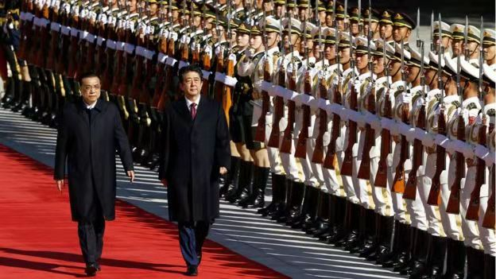

本板块推文本板块推文精选国外主流媒体报道，由编者翻译转载，并提供报道来源网址 (由于某些原因，网站可能无法打开)，推文内容不代表编者主张。本板块一周一推，力 求客观，致力于为大众打造观察中国的新视野。精选国外主流媒体报道，由编者翻译转 载，并提供报道来源网址(由于某些原因，网站可能无法打开)，推文内容不代表编者主 张。本板块一周一推，力求客观，致力于为大众打造观察中国的新视野。
陷入外汇储备危机的巴基斯坦，11日正式向国际货币基金组织（IMF）开启贷款援助程序。
此举立刻让外界联想到“一带一路”倡议的旗舰项目——中巴经济走廊，认为该项目成本过高、收益太小，或加重了巴国的债务负担。
从马来西亚、缅甸、斯里兰卡和马尔代夫，到现在的巴基斯坦，一个个原本标榜为一带一路靓丽名片的基建项目，如今却逐一陷入资金周转困境。五年来火速前进的一带一路“高铁”，到底出了什么问题？
项目缺乏透明性和可持续性
清华—卡内基全球政策中心莫里斯·格林伯格荣誉主任韩磊（Paul Haenle）接受《联合早报》访问时分析，许多一带一路项目缺乏透明性和可持续性，是该倡议最大的致命伤。
以斯里兰卡为例，当地官员一开始就质疑，位于哥伦布的海港仍有扩建空间，没必要在汉班托塔再修建新的港口；当地政府开展的可行性研究也表明，汉班托塔港的经济效益极低。
不过，亲华前总统拉贾帕克萨执意推进该项目，几年后，斯里兰卡政府因无力偿还拖欠中资企业的80亿美元而陷入债务漩涡。作为抵押，斯里兰卡去年签署了99年租约，将具有战略意义的汉班托塔港移交给中国。
分析批评，一些政客喜欢耗巨资修建经济效益不高的“面子工程”，作为项目评估方，中国应该更谨慎挑选真正能给当地人带来实惠的民生工程。
韩磊也指出，许多一带一路项目的招标程序不透明，可能滋生腐败问题。
IMF总裁拉加德（Christine Lagarde）本月初就说，巴基斯坦若要寻求IMF贷款援助，就必须“绝对透明地”公开所有债务，包括在一带一路框架下拖欠中国的债务。此前有人质疑，中巴经济走廊的条款或对巴国不利，不排除有巴方人员抬高价格，中饱私囊。
也正因项目不透明，引起外界怀疑，一带一路项目受益最大的其实是中国，而非项目所在国。
有分析就指出，很多一带一路项目最终都落在中国企业手中，项目的落地和建设也只聘用中国劳工，并没有为当地经济发展带来多大的好处。
专家呼吁中国加入巴黎俱乐部
也有专家批评，中国放贷没有遵循国际惯例，打乱了国际借贷秩序，可能在新兴市场中掀起一波债务危机。
这些惯例包括：系统性评估负债国的经济情况和债务偿还能力；要求负债国进行必要的经济和政治体制结构性改革，包括扩大开放、引入市场经济、货币贬值、提高国内税率、解决贪污问题等；以及在出现债务危机时，协助负债国重组债务，甚至是宽免或撤销债务，而不是要求负债国以资产抵押来还债。
美国外交关系协会兼职高级研究员海蒂·克里博-雷迪克（Heidi Crebo-Rediker）日前就撰文呼吁中国加入巴黎俱乐部（Paris Club）。
巴黎俱乐部是成立于1956年的非正式国际组织，它同IMF和多边发展银行合作，为负债国和债权国提供债务安排，目标是把负债国拉回到可持续经济的轨道上。其成员包括美国、英国、澳大利亚、加拿大、德国、日本等22个常任成员国。
克里博-雷迪克直言，中国要世界拥抱一带一路倡议，首先就必须成为负责任的债权国，遵循透明、可行、可持续借贷的国际贷款规则。
新加坡国立大学李光耀公共政策学院副教授顾清扬接受本报访问时说，如果债务重组是处理国家债务问题的国际惯例，中国就应该接受。但他强调，在借贷理念上，中国和西方是有本质上的不同。
中西方借贷理念不同
他说：“西方的贷款先决条件，包括经济发展水平、人权、腐败、政府透明度等，很多发展中国家都无法满足，因此往往拿不到贷款。”
“而中国认为，这些要求是对的，但它是结果，不是条件。这些国家现在工业不发达、偿还能力不足，但中国可以先帮它们把基建项目建起来，以后产生盈利、有现金流了，再慢慢还钱。”
中国人民大学国际关系学院教授王义桅也说，中国提供的是一套有别于西方自由派“市场经济主导”的替代方案。
他说：“中国强调的是先发展、后改革。投资基建要看长远，一开始要由政府主导，为市场经济创造条件后，经济才可以长远运转，达到良性循环。这才是解决债务问题的根本途径。”
王义桅说，一些政府因国内腐败，滥用中国的贷款，结果卷入债务危机，这笔帐不能算到中国头上。
中国学者：中国正在试错
但他也承认，对于基建投资和贷款，中国仍在试错过程中，“现在看起来有一点问题，但总体还是可行的”。
中国财政部副部长邹加怡上周就在一场国际研讨会上表示，一带一路项目的债务可持续性是个“复杂的问题”，但中国有能力解决。她说，北京会鼓励中方企业、金融机构未来在开展项目时，以经济社会效益为导向，“合理设计项目融资结构”。
中国国家主席习近平8月在推进“一带一路”建设工作五周年座谈会也说，一带一路至今已绘就一幅“大写意”，今后要绘制好精谨细腻的“工笔画”。他要求，搭建更多贸易促进平台，注重贸易平衡；引导社会资金共同投入沿线国家的项目。
王义桅建议：“我们可以尝试拓宽融资来源，包括利用丝路基金、亚投行、和多边投资机构等融资平台，吸引各国资金参与进来。中国也在探索债务风险评估、争端解决机制等方面的工作。”
韩磊说，全球基础设施建设目前还存在很大的资金缺口，中国愿意在此过程中扮演建设性角色，是值得鼓励的。但一带一路项目近来遇到麻烦，也切实反映了中国在不熟悉的政经环境中大规模实施基建工程的巨大难度。
他提议，中国应公开项目的经济数据、贷款条件，并对所有项目开展有效的风险、可行性和可持续性评估，以具体行动回应国际社会的关注。
他说：“在一带一路提出五年的节点上，中国可以借机反思这项伟大工程的成败经验，从中汲取教训，确保未来的项目不要重蹈覆辙。”
10月底的北京，已有些许寒意，日本首相安倍晋三穿着大衣乘坐中国国宾礼车来到人民大会堂。当中国国军军乐队奏起日本国歌“君之代”，两国国旗在天安门飘扬。日本《朝日新闻》周六（10月27日）的头版描述“中日关系终于步上正常轨道了”。
中日关系的暖化在台湾引发关注。台湾外交部先前于本周四（10月25日）表示，中日高峰会“不影响既有台日关系”，并认为“有助于区域和平稳定”。一位熟悉中日台关系的民进党高层对BBC中文记者表示，他们都有在观察局势变动。
台湾《中国时报》和《联合报》担心，中日关系的改善恐压缩未来台日关系进展。而事实上，自从2016年台湾总统蔡英文上任以来，台日关系民间交流仍然热络，但官方依旧没太多实质进展。
2017年1月，日本驻台的交流协会（同大使馆层级）更名为“日本台湾交流协会”；2018年台湾的双十节，安倍晋三的母亲安倍洋子，则以“私人受邀”身份参加在东京的酒会。不过这些，对日本来说都属于民间性质，官方仍在“冷却”。
外界观察，日本将在2020年举办奥运，2019年又预计邀请中国大陆国家主席习近平访问日本，甚至可以跟即将退位的天皇再见个面。在此时此刻，不会在外交及其他问题上与中国再有摩擦。因此，日本方面优先改善中日关系，将台日关系“冷处理”似乎可以预见。
先稳定友谊，避谈敏感问题
在正式会见上，中日双方并未提到太多敏感问题。台湾淡江大学日本政经研究所所长蔡锡勋对BBC中文记者表示，基本上从头到尾，两国在会谈中都没有提及台湾、南海、钓鱼岛或其他历史问题，这些都不是这次两国会谈的核心，“显然两边都想先稳定彼此的友谊”。
蔡锡勋称：两国强调“从竞争变成协调、两国共同投资第三国等”，显然两边都想要找寻新的经济开发合作。中美在贸易战之余，中方需要新的盟友，因此愿意跟日本在经济面上加大合作，暂且搁置两国争议。
而台湾政府则需要关注日本将来是否将会走美国的“印太战略”还是中国的“一带一路”。
台湾辅仁大学日文系教授兼日本研究中心主任何思慎对BBC中文说，安倍晋三出发来中国访问前，还是重申了既有立场“尊重1972年的中日联合声明”，两国一定程度上要先重述外交理念，“因为他们也只能这样做”。
他认为自从70年代后，台湾政府或多或少都会有些与日本友好甚至近官方性质的互动，“但每到中日关系暖化的重要时刻，72年体制都会被拿出来‘拴紧’，民进党看似与日本关系有维持住，但往后中日发展是值得观察的”。
他建议，中日关系暖化，“民进党如果回到九二共识，这个根本问题先解决，在台日关系中才有路可以走，如果中日关系持续升温，那（台日关系）就不太好”。
“核食”开放或成焦点
自2011年3月福岛核灾后，中国停止进口来自日本宫城、福岛和茨城等10个都县出产的食品与饲料，并且要求来自日本其他地区的食品皆须附上产地证明。而台湾的限制要宽松一些，仅限制或停止从10县市进口。
而在这次的中日高峰会中，两国并没有就是否开放核灾地区食品进一步讨论，中国总理李克强跟安倍晋三见面时表示将“基于科学评估”来审慎讨论。蔡锡勋表示 ∶ “松了口气”：一旦中国大陆有条件解禁核灾地区食品，相对对台湾政府会造成更大压力。
但台湾辅仁大学日文系教授兼日本研究中心主任何思慎强调，核灾食品开放只是中日关系间的其中一个面向，两国有正式外交“往后他们还有很多国际场合可以讨论”。不像核灾食品问题在台湾，被政府与在野党升高为“最优先选项”，让这个问题几乎等同台日关系的当前问题。
何思慎指出，核灾食品开放确实影响到目前的台日关系，也是这两年台日关系僵化的重要因素。
一位不愿具名的民进党高层人士对BBC中文记者形容，台日关系好似“表面上会斗嘴，但私下就是真正朋友，价值观是一样的”。而中日关系比较像是“表面上朋友，但台面下暗潮汹涌”，类似大企业互相合作却又竞争。
不过台日这样的“私下的朋友关系”，未来是否会在中日关系寻找新的经济合作下被“牺牲”。在中日“从竞争走向协调”与“互不构成威胁”新关系下，台湾政府也只能且战且走。
10月22日
BBC中文网
台铁失速列车：罹难家属无法磨灭的伤痛
（10月21日，一辆火车从台湾新北市树林区出发，南下前往台东，突然在新马车站翻覆，现场凌乱不堪，不少人与物品被抛出车外。造成18死与187伤的惨剧。）
纽约时报中文网
中国或被迫放松借贷以提振经济
（这个国家的经济尚未陷入绝境，但信心似乎已经受到了动摇。中国经济在2018年第三季度增速为6.5%，低于预期。其他经济指标也欠佳：固定资产投资增速创历史新低，零售销售遇冷。）
路透社
China's tax cuts next year expected to reach 1 percent of GDP - PBOC adviser
中国明年的减税预计将达到GDP的1％ - 中国人民银行顾问
（中国央行顾问周一发表的言论称，中国明年的减税政策可能超过相当于国内生产总值（GDP）的1％，政策制定者可能正在考虑进行新一轮的减税措施。）
10月23日
BBC中文网
美国退出《中导条约》一箭双雕：抗衡俄国 威慑中国
（特朗普说：“俄罗斯违反协议。他们多年来一直违反协议……我们不会让他们违反核协议，让他们去发展武器而不允许我们……我们尊重协议……但不幸的是，俄罗斯没有履行协议。所以我们将退出（条约）。”）
联合早报
外交部发言人华春莹：美退出中导条约归咎中俄“完全错误”
（中国外交部发言人华春莹指出，《中导条约》在今天仍具有十分重要的意义，美国单方面退约将造成多方面消极影响，希望与美通过对话协商，慎重妥善处理与条约相关的问题。）
路透社
China's Xi opens world's longest sea bridge linking Hong Kong, Macau
中国的习近平开辟了连接香港和澳门的世界上最长的海上大桥
（国周二开放了世界上最长的跨海大桥和隧道，连接香港金融中心，澳门赌博中心和珠江三角洲西部，是中国南方经济繁荣的中心。）
10月24日
BBC中文网
台湾普悠玛惨剧调查：失速的列车 失常的台铁
（1日发生在台湾新马车站旁弯道的特急列车“普悠玛”6432车次出轨意外，造成18死210伤的惨剧。在肇事主因得到确认后，更多人为问题也开始浮现。）
联合早报
一带一路五周年特稿：一带一路到底出了什么问题？
10月25日
BBC中文网
美国沿“一带一路”鼓励各国对中国说“不”
（中国的"一带一路"计划在西方受到批评，批评者说中国推行"债务外交"，中国投资贷款是控制其他国家的"战略投资"。与此同时美国在"一带一路"沿路鼓励其他国家对中国说"不"。）
纽约时报中文网
美官员称中俄间谍窃听特朗普手机
（据现任和前任美国官员表示，当特朗普总统用自己的某部iPhone手机给老朋友讲八卦、发牢骚，或是询问他们对自己表现的最新看法时，美国情报机构的报告表明，中国间谍往往都在听着——并且对这些如何能最有效地影响总统、美国政府政策的宝贵洞察加以利用。）
路透社
China says military will act 'at any cost' to prevent Taiwan split
中国表示，军方将“不惜一切代价”采取行动，防止台湾分裂
Worried about Trump iPhone eavesdroppers? China recommends a Huawei
担心特朗普iPhone窃听者？中国推荐华为
10月26日
纽约时报中文网
献金丑闻不断，新西兰警惕中国政治干预
重庆一女子持刀袭击幼儿园，14名儿童受伤
路透社
China, Japan to forge closer ties at 'historic turning point'
中国，日本将在“历史转折点”建立更紧密的关系
（中国和日本周五承诺加强关系，因为两国在一个“历史性转折点”站在一起，签署了包括300亿美元货币互换协议在内的广泛协议，与华盛顿的贸易紧张局势加剧。）
10月27日
BBC中文网
中日关系暖化：台日关系持续审慎“冷却”
（中日关系的暖化在台湾引发关注。台湾外交部先前于本周四（10月25日）表示，中日高峰会“不影响既有台日关系”，并认为“有助于区域和平稳定”。一位熟悉中日台关系的民进党高层对BBC中文记者表示，他们都有在观察局势变动。）
联合早报
重庆妇女血洗幼儿园
（重庆一名39岁妇女持菜刀砍幼儿园儿童，导致14名儿童受轻重伤，凶手事后被逮捕。据目击者透露，妇女被制服过程中大喊：“政府对我不公平！”）